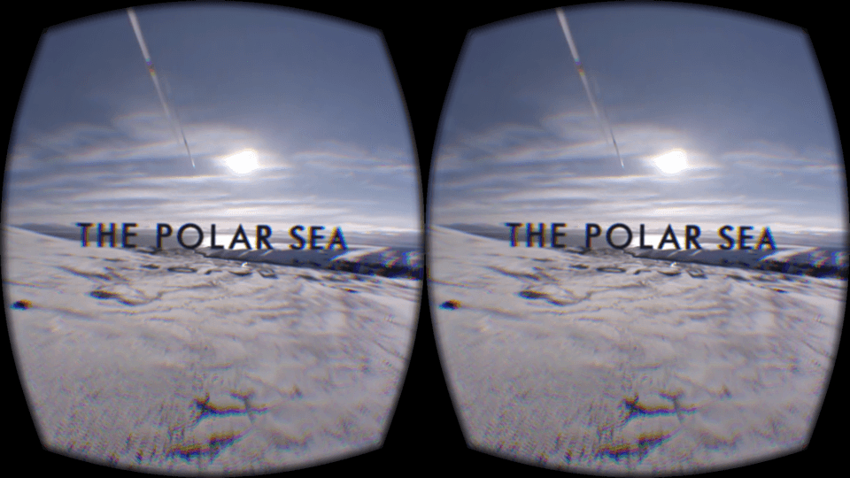
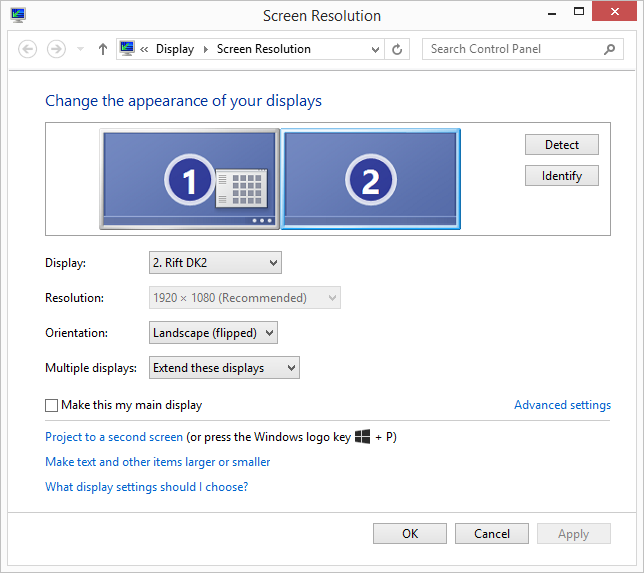
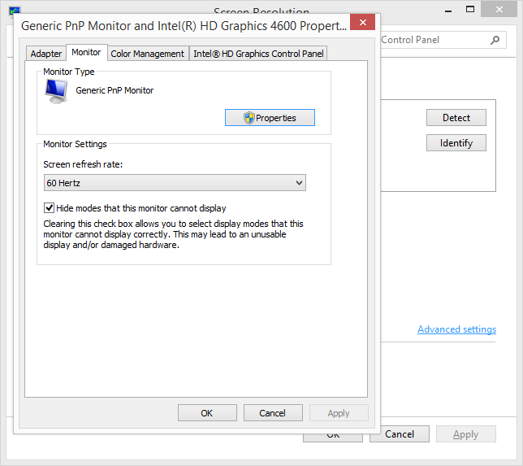
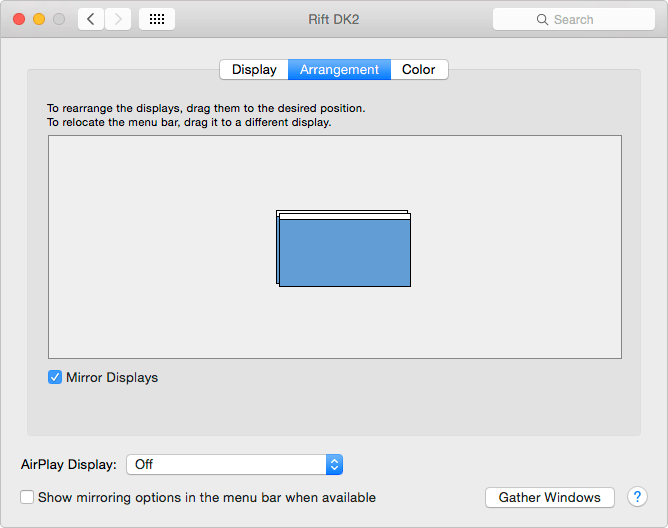

This article needs a technical review. How you can help.
Draft
This page is not complete.
In this article, we'll take you through what you need to set up your WebVR testing environment — including necessary hardware and software — and share some troubleshooting tips.
Hardware
Let's first look at the hardware required for WebVR.
Head mounted displays/positional trackers
There are a few options available for VR HMD hardware at present, but the best/most reliable one is the Oculus Rift, which comes with a robust head-mounted display and a positional tracking camera that mounts on a tripod or monitor. The Oculus Rift DK2 currently retails at $350, but prices are expected to come down as more headsets appear on the market, and the technology advances.

For those of you who are not in the position to invest in a full-on VR hardware unit, there are cheaper alternatives. A VR HMD is just a high-resolution screen with a set of eye goggles in front of it. The display shows two slightly offset cropped and vignetted copies of a scene side by side, one for each eye, to create a stereoscopic view for the user — essential for creating the VR illusion.

To create something approximating the same experience, you could use a supporting browser such as Firefox for Android Nightly — try running a VR app through this, and perhaps create some sort of head apparatus to mount your phone on. This was the idea behind Google Cardboard. The main issue here is that you won't have a positional tracker, and the phone processor won't be as powerful as a desktop PC, so the experience is not quite as realistic (you won't get the same effect by turning your head, and it might be jerky.) But, as an affordable test alternative, it works ok.
A computer for rendering the VR scene
Virtual Reality hardware needs to deliver high-precision, low-latency data to deliver an acceptable user experience — the display updates need to run at 60 fps otherwise the experience will seem juddery/jerky. A lot of data needs to be processed to keep this up. Therefore, computers running VR applications need to be quite powerful. Ideally, you should be using a high spec laptop or desktop computer with a dedicated graphics card/GPU. Something like a modern MacBook Pro 15"/17" or Mac Pro, or a Windows gaming PC should be perfect. If you have a slower computer, you will get a jerky display.
Software
To run WebVR apps, you will need the software setup described below.
Oculus Rift SDK
Assuming you will be using an Oculus Rift, you should download and install the Oculus Rift SDK for your system. This includes the Oculus Rift runtime that is required to run any VR app, plus the OculusWorldDemo app, which is useful for troubleshooting.
Firefox Nightly and WebVR Enabler Add-on (or equivalent)
To setup your browser, follow these steps:
- Firefox Nightly and Developer Edition both support WebVR. Install one of those if you haven't already, or make sure your current install is up to date.
- Next, install the WebVR Enabler Add-on — this enables WebVR and disables multiprocess browsing (E10S), a new Firefox browsing feature that is currently incompatible with WebVR.
- Finally, restart your browser.
Note: To enable WebVR support manually you can go to about:config and enable the dom.vr* prefs. The WebVR Enabler Add-on is much easier, however, as it does everything you need in one go.
Note: For mobile users, Firefox for Android now also supports WebVR in Nightly builds. The current implementation is rough and will evolve over time, so feedback is welcome!
Note: There are also experimental Chrome builds available with WebVR support. To find out more, check out Bringing VR to Chrome by Brandon Jones.
Display configuration
For optimal performance, it is very important to configure your displays as explained below. Not doing so contributes to excess judder and latency. We are working on improving all of these aspects and making WebVR truly plug-and-play, but for now best results require manual configuration.
Windows
In the control panel, first go to Display > Screen Resolution. Set:
- Orientation to Landscape (flipped).
- Multiple displays to Extend these displays.

Next, go to Advanced Settings > Monitor > Monitor Settings and set Screen refresh rate to 60Hz.

Mac
First, go to System Preferences > Displays > Display. Set:
- Optimize for to Rift
- Rotation to 90°
- Refresh to 60Hz

Next, go to System Preferences > Displays > Arrangement and set Arrangement to Mirrored.

Troubleshooting
In this section, we provide some troubleshooting tips.
- My HMD or positioning tracker camera won't work at all.
- Try testing the system out with the OculusWorldDemo that comes with the Oculus Rift SDK, or an equivalent demo if you have different VR hardware. If your hardware units aren't working at all, make sure you have set them up exactly as explained in the accompanying manual. Classic mistakes include leaving the lens cap on the tracking camera and forgetting to plug in the USB cables.
- My HMD or positioning tracker camera still won't work at all.
- A common issue is that the tracking camera stops working, so you can still see the scene, but it doesn't rotate as your head does. A tip: the camera's blue light will be on if it is working. If WebVR apps still aren't working, and the OculusWorldDemo is working, try restarting your browser — Nightly is still very experimental, and just gets a bit stuck sometimes.
- My graphics are still juddery/jerky, even though I've followed the Display configuration instructions correctly.
- Either your graphics card/GPU is too slow, you haven't got a dedicated graphics card/GPU, or your computer is not swapping to the graphics card when the Oculus Rift is turned on. This should be the case, but we can't guarantee it with all computers. Either way, you can test what is happening with an application like gfxCardStatus for Mac. It will let you see when the integrated vs. discrete GPU swaps happen, and even force a particular one to be used. If it returns the message "You are using a system that gfxCardStatus does not support. Please ensure that you are using a MacBook Pro with dual GPUs." then you probably don't have a GPU, and you need to get a faster processor or tolerate the jerkiness. For Windows, there is currently no equivalent app, and you'll have to make changes manually.
- My existing second monitor is acting strangely alongside my VR device(s).
- If you already have a second monitor (or external monitor in the case of laptops), you'd be advised to unplug it while using your VR devices. Sometimes you can get some strange effects.
- What about Linux?
- WebVR is/is not currently available for Linux? TBC.